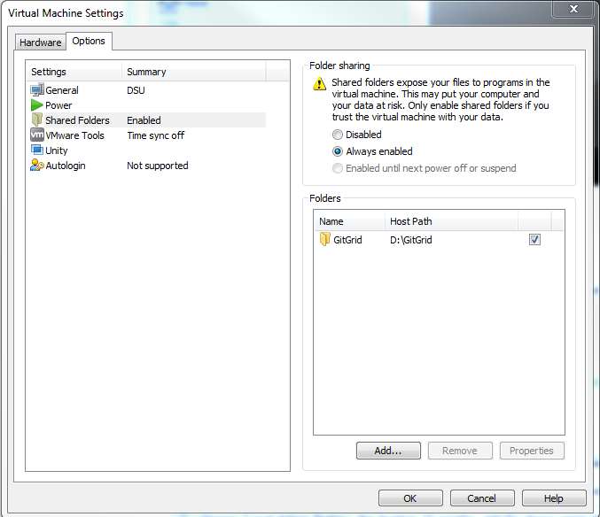

13.03.2018
Hello colleagues,
to get you ready for Ubuntu and the future work with the DrivePX2 as soon as possible, we recommend you to order and install a VMware-Ubuntu-Image.
Click on your "Employee Self Service" --> "IT Request management (SSP7)" --> "New Request" --> "Hardware & Software" --> "Software Installation (Automotive & Rubber)".
Choose your device name (hostname) and search for the Ubuntu-Image (Ubuntu Client 1.0.0.0) in the search field.
Submit the order, after the approval process, install the VMWare with the "Portal Manager" and start it.
An automated script will install Ubuntu in the VMWare, after the installation please write down the device name (displayed in the top left).
With the device name of the VM you can now order admin rights (and if you want SSH).
Click on your "Employee Self Service" --> "IT Request management (SSP7)" --> "New Request" --> "User- and Group Management" --> "Windows & Linux".
Choose "Local Admin Rights", the duration 12 months, add the device name (hostname) of your VM.
Keep in mind that the VM is using 15GB of disk space and additional diskspace for each SW-Repo you install, so we would recommend to keep 40-50GB of diskspace free.
In the next weeks we will deploy a docker solution so that every developer gets the same environment, until then you can use the time to gain some experience with the new OS.
####################################################################################################
If we missed any colleague, please send me his/her name and E-Mail address.
Mit freundlichen Grüßen / Best regards
Andreas Hauk
13.03.2018
Hello colleagues,
to avoid confusion, the provided tutorial is intended for all developers who want to compile / crosscompile their code using Ubuntu and run software components independently from the Nvidia SDK.
If your development requires to run DriveWorks based components, then you need a native Ubuntu. DriveWorks does not run in a VM!
So it's required to have a Notebook with a native Ubuntu and a dedicated Nvidia graphics card.
If in doubt, which computers are suitable, please ask your CEOS representative or read here: http://github.conti.de/CTZS/driveworks_samples/wiki/Hardware
#############################################################################################################
Shared libraries einbinden:
In Einstellungen habe ich wie folgt eingebunden:
Das Volumen taucht dann in /mnt/hgfs/GitGrid auf
Dieses kann beim Starten im Docker noch dazu gemountet werden (siehe Docker/Befehle 6) Erweiterung mit shared libraries:)
